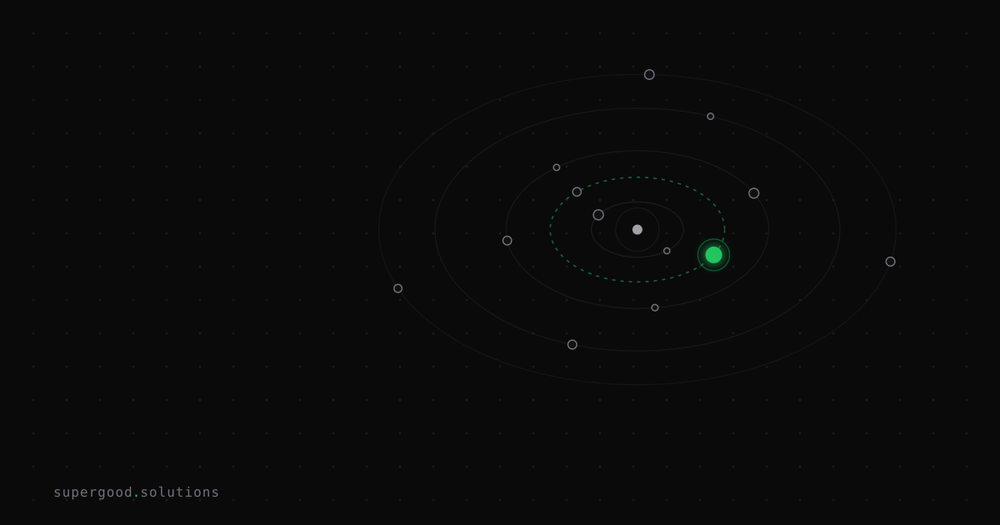

Agent Handoff Is the New API Contract Nobody Writes Down
TL;DR: In multi-agent pipelines, the agent that crashes your orchestration isn't the one writing bad code — it's the one silently receiving the wrong context. Treat inter-agent handoffs with the same rigor as a versioned REST contract or your pipeline degrades without a single error log to show for it.
Key Insight
Everyone instrument the individual agents. Nobody instruments the seams between them.
When teams build multi-agent pipelines — a Planner feeds a Researcher feeds a Writer feeds a Publisher — the typical debugging strategy is to look at each agent in isolation. Did it get the right model? Did its prompt make sense? Did it time out? These are real questions worth asking, but they're not where most production failures actually originate.
The real failure mode is the handoff: the JSON blob, the text chunk, or the conversation snippet that one agent hands to the next. It almost never has a schema. It almost never has a version. It's usually just "whatever the upstream agent produced," passed forward with zero validation that the downstream agent was designed to consume exactly that shape.
This is how a pipeline that works perfectly in staging silently collapses in production. The Planner starts summarizing differently because the model was swapped. The Researcher never notices — it just processes a truncated task description. The Writer produces something generic. Nobody threw an exception. The orchestration "succeeded."
The failure was undocumented in every direction.
Why Teams Miss This
Teams think of agent-to-agent communication as an implementation detail, not a contract surface.
When you expose an HTTP API between two services, you write a schema. You version it. You write tests that break if the shape changes. You add deprecation notices. Engineers treat that boundary with respect because they know exactly how badly a silent schema drift can hurt.
Agent-to-agent message passing gets none of that treatment because the messages are usually natural language or loosely typed JSON. "It's just text" is the unspoken assumption, and it's wrong. A downstream agent is just as dependent on upstream structure as any REST consumer — it's just that its "schema" is baked into its system prompt instead of an OpenAPI spec.
The Hugging Face smolagents architecture makes this concrete: in a multi-agent system, "one agentic workflow can start another agentic workflow," and the triggering context is whatever the parent agent decides to pass. There's no enforcement layer. If the parent changes how it summarizes completed work, the child agent has no idea it just received a different shape of world.
There's also a compounding problem: agents are stateless across calls. If the context window gets trimmed, summarized, or passed through a lossy handoff, the receiving agent doesn't know what it's missing. It just works with what it got and produces output that looks plausible.
Plausible-but-wrong is the worst kind of failure because it doesn't alert anyone.
How to Actually Do It
Treat every agent-to-agent boundary like a versioned API. That means three things in practice.
1. Define the handoff schema explicitly.
For each hand-off point in your pipeline, write down what fields the downstream agent depends on. This doesn't have to be a full JSON Schema — a simple typed dictionary with required vs. optional fields is enough to start.
# handoffs/planner_to_researcher.py
SCHEMA_VERSION = "1.2"
REQUIRED_FIELDS = [
"task_description", # str: the narrowed research question
"context_summary", # str: what the planner already knows
"output_format", # str: "bullet_list" | "narrative" | "structured_json"
"source_budget", # int: max number of sources to retrieve
]
OPTIONAL_FIELDS = [
"excluded_domains", # list[str]: skip these
"prior_attempts", # list[str]: what was tried and failed
]2. Validate at the boundary, not inside the agent.
Don't make the downstream agent defensive about malformed input. Put a thin validation layer at the handoff point that fails loudly when required fields are missing or the wrong type. Loud failures at the seam are a feature — they catch upstream drift before it propagates.
def validate_handoff(payload: dict, schema_version: str) -> None:
if payload.get("schema_version") != schema_version:
raise ValueError(
f"Handoff schema mismatch: expected {schema_version}, "
f"got {payload.get('schema_version', 'MISSING')}"
)
for field in REQUIRED_FIELDS:
if field not in payload:
raise KeyError(f"Required handoff field missing: {field}")3. Log the handoff payload, not just the agent outputs.
Your observability should capture what crossed the boundary, not just what each agent returned. If a pipeline run produces bad output, you want to be able to diff the handoff payloads across two runs and spot exactly where the upstream agent started passing a different shape. One JSON log line per handoff pays for itself the first time you have to debug a production regression.
import logging, json
def log_handoff(source_agent: str, target_agent: str, payload: dict) -> None:
logging.info(json.dumps({
"event": "agent_handoff",
"source": source_agent,
"target": target_agent,
"schema_version": payload.get("schema_version"),
"payload_keys": list(payload.keys()),
"payload_size_chars": len(json.dumps(payload)),
}))None of this requires a new framework. It's just discipline applied to the right boundary.
What We've Learned
Pick your most critical multi-agent handoff — the one where a bad payload would do the most damage downstream — and spend 30 minutes writing its schema and a validation function this week.
You don't need to retrofit the whole pipeline. Start at the highest-stakes seam, run one production cycle with handoff logging enabled, and compare what you expected the payload to look like versus what it actually was. The delta is usually more interesting than you expect.
Versioning comes next. Once you have a logged schema, add a schema_version field and bump it whenever the upstream agent's output format changes. That one field turns a silent regression into a caught exception.
The teams that get multi-agent pipelines working reliably in production aren't the ones with the best models at each node. They're the ones who stopped treating the space between agents as someone else's problem.
Sources
- smolagents: simple agents that write actions in code — Hugging Face Blog; introduces multi-agent architecture and the agency spectrum
- smolagents GitHub repository — source for multi-agent orchestration patterns
- Building Effective Agents — Anthropic; covers orchestrator-subagent patterns and when agent complexity is warranted
- OpenAPI Specification — the REST contract model that agent handoffs should borrow from
Have a specific workflow in mind?
Bring it to a Quick Scan — a live working session where we'll tell you honestly whether it should be an agent, a workflow, or left alone, before you spend a dollar building it. You get 3 prioritized recommendations on the call, a one-page summary after, and the $500 credited toward any engagement within 30 days.
Get new posts + practical agent-ops notes
One email when something new goes up. No nurture sequence, no spam — unsubscribe whenever you want.